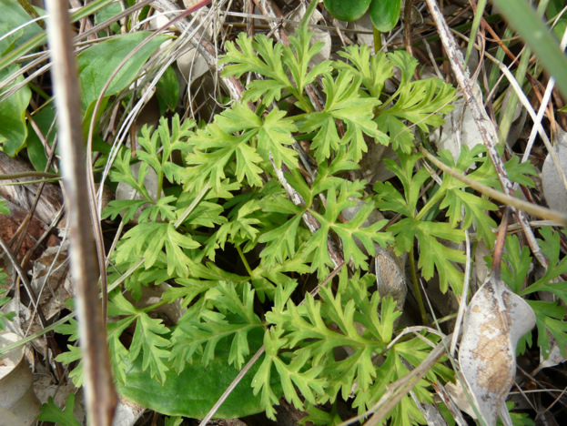

| PHRYGANA | Fauna | Flora | nouveautés | liste des espèces |
contact -
info - commentaires phrygana1 (at) gmail.com |
| Particularités crétoises | Galles et mines | ressources naturelles |
| Anemone coronaria L. |
| 142 | Flora | RANUNCULACEAE | Anemone |
|
Anemone coronaria Melambes 17 février 2008 |
| en: Crown anemone fr: l'Anémone couronnée | |
| Feuilles: basilaires trilobées, très découpées. Pétiole élargi à la base. Feuilles caulinaires sessiles. | |
| Tige: à poils très courts (tige presque pubescente) | |
| Fleurs: larges de 35 - 60 mm, à 5 - 8 pétales elliptiques-ovales. Couleur variant du bleu au rouge purpurin, blanc rosé, bicolore. | |
| Etamines: Etamines bleues ou pourpre noir. | |
| Fruit: akènes plumeux. | |
| Hauteur: 10 - 40 cm | Type biologique: géophyte bulbeux |
| Altitudes: 0 - 1200 m | |
| Floraison: novembre décembre janvier février mars | |
| Statut en Crète: indigène | |
| Biotopes en Crète: phrygana, olivaies, champs abandonnés, sols argileux | |
| Distribution: région Méditerranéenne | |
| Note: plante héliophile, parfois en grand nombre dans ses stations. | |
|
 Anemone coronaria Melambes (Agios Giorgos) 15 janvier 2009 |
|
Anemone coronaria Melambes (Agios Giorgos) 20 décembre 2009 Anemone coronaria Melambes (Agios Giorgos) 18 janvier 2010 |
|
Anemone coronaria Melambes (Agios Giorgos) 19 décembre 2009 Anemone coronaria Melambes (Agios Giorgos) 21 février 2008 |
|
Anemone coronaria Lagolio 19 décembre 2009 |
|
Anemone coronaria Melambes (Agios Giorgos) 19 décembre 2009 Anemone coronaria Lagolio 19 décembre 2009 |
|
Anemone coronaria Melambes (Agios Giorgos) 18 décembre 2007 Anemone coronaria Melambes (Agios Giorgos) 21 février 2008 |
|
Anemone coronaria Melambes (Agios Giorgos) 20 décembre 2009 |
|
Anemone coronaria Melambes (Agios Giorgos) 11 janvier 2010 Anemone coronaria Melambes (Agios Giorgos) 21 février 2008 |
|
Anemone coronaria Melambes (Agios Giorgos) 11 janvier 2010 |
|
Anemone coronaria Melambes (Agios Giorgos) 10 mars 2011 |
|
Anemone coronaria Lagolio (Tymbaki) 20 janvier 2012 |
| 25 janvier 2012 |
| © paul fontaine -- © Phrygana.eu 2007 -- 2013 |